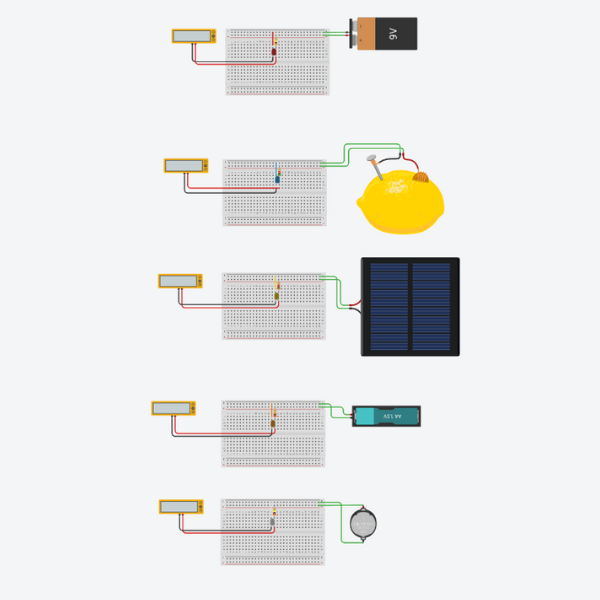
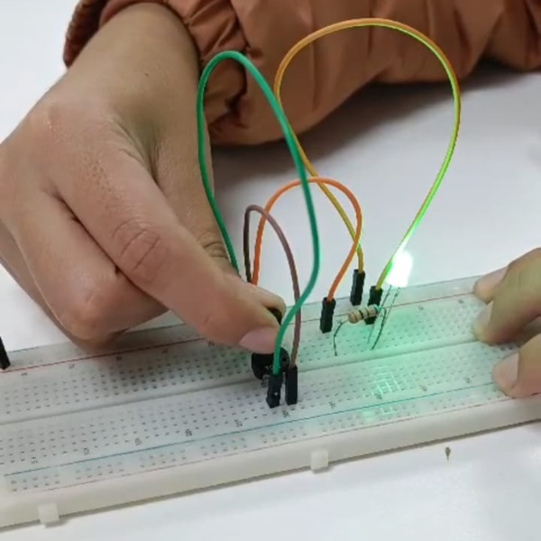
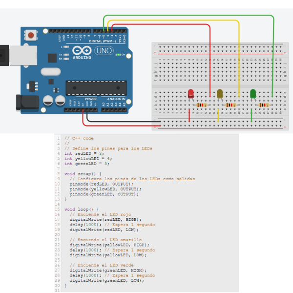
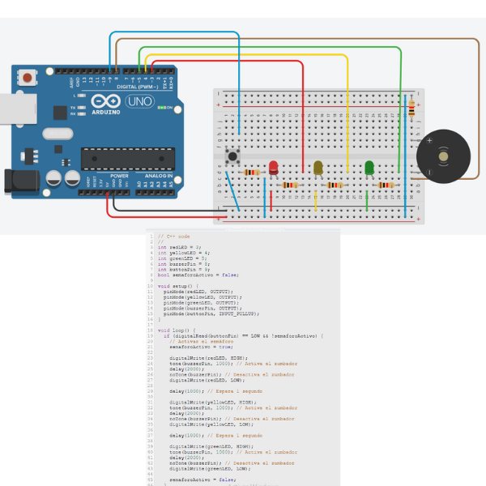

|  |
Misi√≥n 1 üí° En la primera misi√≥n realizamos distintos circuitos en tinkercad donde variamos el voltaje que llega a LEDS con diferentes resistencias y fuentes de energ√≠a. Ejercicios en tinkercad. |
|  |
Mision 2 üßê En la misi√≥n 2 realizamos un ejercicio parecido, ten√≠amos que lograr cierta cantidad de voltaje escogiendo las resistencias correctas. |

|
Mision 3 üåà En la misi√≥n 3 en equipo decidimos de que iba a tratar nuestro proyecto y que componentes necesitar√≠a. Yo me encargu√© de realizar el flujo. |
|  |
Mision 4 üö¶ En la misi√≥n 4 durante la clase virtual hicimos el circuito de un semáforo donde cada luz prend√≠a por turnos. Circuito en tinkercad. |
|  |
Mision 5 üì£ En la misi√≥n 5 no pude asistir a clases entonces hice un circuito en tinkercad donde cada vez que presionas un pulsador se prenden las luces de un semáforo en orden y suena una bocina. Circuito en tinkercad. |